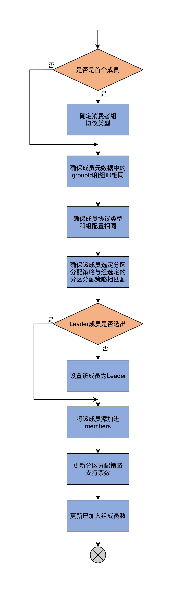

- 00 导读 构建Kafka工程和源码阅读环境、Scala语言热身.md
- 00 开篇词 阅读源码，逐渐成了职业进阶道路上的“必选项”.md
- 00 重磅加餐 带你快速入门Scala语言.md
- 01 日志段：保存消息文件的对象是怎么实现的？.md
- 02 日志（上）：日志究竟是如何加载日志段的？.md
- 03 日志（下）：彻底搞懂Log对象的常见操作.md
- 04 索引（上）：改进的二分查找算法在Kafka索引的应用.md
- 05 索引（下）：位移索引和时间戳索引的区别是什么？.md
- 06 请求通道：如何实现Kafka请求队列？.md
- 07 SocketServer（上）：Kafka到底是怎么应用NIO实现网络通信的？.md
- 08 SocketServer（中）：请求还要区分优先级？.md
- 09 SocketServer（下）：请求处理全流程源码分析.md
- 10 KafkaApis：Kafka最重要的源码入口，没有之一.md
- 11 Controller元数据：Controller都保存有哪些东西？有几种状态？.md
- 12 ControllerChannelManager：Controller如何管理请求发送？.md
- 13 ControllerEventManager：变身单线程后的Controller如何处理事件？.md
- 14 Controller选举是怎么实现的？.md
- 15 如何理解Controller在Kafka集群中的作用？.md
- 16 TopicDeletionManager： Topic是怎么被删除的？.md
- 17 ReplicaStateMachine：揭秘副本状态机实现原理.md
- 18 PartitionStateMachine：分区状态转换如何实现？.md
- 19 TimingWheel：探究Kafka定时器背后的高效时间轮算法.md
- 20 DelayedOperation：Broker是怎么延时处理请求的？.md
- 21 AbstractFetcherThread：拉取消息分几步？.md
- 22 ReplicaFetcherThread：Follower如何拉取Leader消息？.md
- 23 ReplicaManager（上）：必须要掌握的副本管理类定义和核心字段.md
- 24 ReplicaManager（中）：副本管理器是如何读写副本的？.md
- 25 ReplicaManager（下）：副本管理器是如何管理副本的？.md
- 26 MetadataCache：Broker是怎么异步更新元数据缓存的？.md
- 27 消费者组元数据（上）：消费者组都有哪些元数据？.md
- 28 消费者组元数据（下）：Kafka如何管理这些元数据？.md
- 29 GroupMetadataManager：组元数据管理器是个什么东西？.md
- 30 GroupMetadataManager：位移主题保存的只是位移吗？.md
- 31 GroupMetadataManager：查询位移时，不用读取位移主题？.md
- 32 GroupCoordinator：在Rebalance中，Coordinator如何处理成员入组？.md
- 33 GroupCoordinator：在Rebalance中，如何进行组同步？.md
- 特别放送（一）经典的Kafka学习资料有哪些？.md
- 特别放送（三）我是怎么度过日常一天的？.md
- 特别放送（二）一篇文章带你了解参与开源社区的全部流程.md
- 特别放送（五） Kafka 社区的重磅功能：移除 ZooKeeper 依赖.md
- 特别放送（四）20道经典的Kafka面试题详解.md
- 结束语 源码学习，我们才刚上路呢.md
28 消费者组元数据（下）：Kafka如何管理这些元数据？
你好，我是胡夕。今天我们继续学习消费者组元数据。
学完上节课之后，我们知道，Kafka定义了非常多的元数据，那么，这就必然涉及到对元数据的管理问题了。
这些元数据的类型不同，管理策略也就不一样。这节课，我将从消费者组状态、成员、位移和分区分配策略四个维度，对这些元数据进行拆解，带你一起了解下Kafka管理这些元数据的方法。
这些方法定义在MemberMetadata和GroupMetadata这两个类中，其中，GroupMetadata类中的方法最为重要，是我们要重点学习的对象。在后面的课程中，你会看到，这些方法会被上层组件GroupCoordinator频繁调用，因此，它们是我们学习Coordinator组件代码的前提条件，你一定要多花些精力搞懂它们。
消费者组状态管理方法
消费者组状态是很重要的一类元数据。管理状态的方法，要做的事情也就是设置和查询。这些方法大多比较简单，所以我把它们汇总在一起，直接介绍给你。
// GroupMetadata.scala
// 设置/更新状态
def transitionTo(groupState: GroupState): Unit = {
assertValidTransition(groupState) // 确保是合法的状态转换
state = groupState // 设置状态到给定状态
currentStateTimestamp = Some(time.milliseconds() // 更新状态变更时间戳
// 查询状态
def currentState = state
// 判断消费者组状态是指定状态
def is(groupState: GroupState) = state == groupState
// 判断消费者组状态不是指定状态
def not(groupState: GroupState) = state != groupState
// 消费者组能否Rebalance的条件是当前状态是PreparingRebalance状态的合法前置状态
def canRebalance = PreparingRebalance.validPreviousStates.contains(state)
1. transitionTo方法
transitionTo方法的作用是将消费者组状态变更成给定状态。在变更前，代码需要确保这次变更必须是合法的状态转换。这是依靠每个GroupState实现类定义的validPreviousStates集合来完成的。只有在这个集合中的状态，才是合法的前置状态。简单来说，只有集合中的这些状态，才能转换到当前状态。
同时，该方法还会更新状态变更的时间戳字段。Kafka有个定时任务，会定期清除过期的消费者组位移数据，它就是依靠这个时间戳字段，来判断过期与否的。
2. canRebalance方法
它用于判断消费者组是否能够开启Rebalance操作。判断依据是，当前状态是否是PreparingRebalance状态的合法前置状态。只有Stable、CompletingRebalance和Empty这3类状态的消费者组，才有资格开启Rebalance。
3. is和not方法
至于is和not方法，它们分别判断消费者组的状态与给定状态吻合还是不吻合，主要被用于执行状态校验。特别是is方法，被大量用于上层调用代码中，执行各类消费者组管理任务的前置状态校验工作。
总体来说，管理消费者组状态数据，依靠的就是这些方法，还是很简单的吧？
成员管理方法
在介绍管理消费者组成员的方法之前，我先帮你回忆下GroupMetadata中保存成员的字段。GroupMetadata中使用members字段保存所有的成员信息。该字段是一个HashMap，Key是成员的member ID字段，Value是MemberMetadata类型，该类型保存了成员的元数据信息。
所谓的管理成员，也就是添加成员（add方法）、移除成员（remove方法）和查询成员（has、get、size方法等）。接下来，我们就逐一来学习。
添加成员
先说添加成员的方法：add。add方法的主要逻辑，是将成员对象添加到members字段，同时更新其他一些必要的元数据，比如Leader成员字段、分区分配策略支持票数等。下面是add方法的源码：
def add(member: MemberMetadata, callback: JoinCallback = null): Unit = {
// 如果是要添加的第一个消费者组成员
if (members.isEmpty)
// 就把该成员的procotolType设置为消费者组的protocolType
this.protocolType = Some(member.protocolType)
// 确保成员元数据中的groupId和组Id相同
assert(groupId == member.groupId)
// 确保成员元数据中的protoclType和组protocolType相同
assert(this.protocolType.orNull == member.protocolType)
// 确保该成员选定的分区分配策略与组选定的分区分配策略相匹配
assert(supportsProtocols(member.protocolType, MemberMetadata.plainProtocolSet(member.supportedProtocols)))
// 如果尚未选出Leader成员
if (leaderId.isEmpty)
// 把该成员设定为Leader成员
leaderId = Some(member.memberId)
// 将该成员添加进members
members.put(member.memberId, member)
// 更新分区分配策略支持票数
member.supportedProtocols.foreach{ case (protocol, _) => supportedProtocols(protocol) += 1 }
// 设置成员加入组后的回调逻辑
member.awaitingJoinCallback = callback
// 更新已加入组的成员数
if (member.isAwaitingJoin)
numMembersAwaitingJoin += 1
}
我再画一张流程图，帮助你更直观地理解这个方法的作用。

我再具体解释一下这个方法的执行逻辑。
第一步，add方法要判断members字段是否包含已有成员。如果没有，就说明要添加的成员是该消费者组的第一个成员，那么，就令该成员协议类型（protocolType）成为组的protocolType。我在上节课中讲过，对于普通的消费者而言，protocolType就是字符串"consumer"。如果不是首个成员，就进入到下一步。
第二步，add方法会连续进行三次校验，分别确保待添加成员的组ID、protocolType和组配置一致，以及该成员选定的分区分配策略与组选定的分区分配策略相匹配。如果这些校验有任何一个未通过，就会立即抛出异常。
第三步，判断消费者组的Leader成员是否已经选出了。如果还没有选出，就将该成员设置成Leader成员。当然了，如果Leader已经选出了，自然就不需要做这一步了。需要注意的是，这里的Leader和我们在学习副本管理器时学到的Leader副本是不同的概念。这里的Leader成员，是指消费者组下的一个成员。该成员负责为所有成员制定分区分配方案，制定方法的依据，就是消费者组选定的分区分配策略。
第四步，更新消费者组分区分配策略支持票数。关于supportedProtocols字段的含义，我在上节课的末尾用一个例子形象地进行了说明，这里就不再重复说了。如果你没有印象了，可以再复习一下。
最后一步，设置成员加入组后的回调逻辑，同时更新已加入组的成员数。至此，方法结束。
作为关键的成员管理方法之一，add方法是实现消费者组Rebalance流程至关重要的一环。每当Rebalance开启第一大步——加入组的操作时，本质上就是在利用这个add方法实现新成员入组的逻辑。
移除成员
有add方法，自然也就有remove方法，下面是remove方法的完整源码：
def remove(memberId: String): Unit = {
// 从members中移除给定成员
members.remove(memberId).foreach { member =>
// 更新分区分配策略支持票数
member.supportedProtocols.foreach{ case (protocol, _) => supportedProtocols(protocol) -= 1 }
// 更新已加入组的成员数
if (member.isAwaitingJoin)
numMembersAwaitingJoin -= 1
}
// 如果该成员是Leader，选择剩下成员列表中的第一个作为新的Leader成员
if (isLeader(memberId))
leaderId = members.keys.headOption
}
remove方法比add要简单一些。首先，代码从members中移除给定成员。之后，更新分区分配策略支持票数，以及更新已加入组的成员数。最后，代码判断该成员是否是Leader成员，如果是的话，就选择成员列表中尚存的第一个成员作为新的Leader成员。
查询成员
查询members的方法有很多，大多都是很简单的场景。我给你介绍3个比较常见的。
def has(memberId: String) = members.contains(memberId)
def get(memberId: String) = members(memberId)
def size = members.size
- has方法，判断消费者组是否包含指定成员；
- get方法，获取指定成员对象；
- size方法，统计总成员数。
其它的查询方法逻辑也都很简单，比如allMemberMetadata、rebalanceTimeoutMs，等等，我就不多讲了。课后你可以自行阅读下，重点是体会这些方法利用members都做了什么事情。
位移管理方法
除了组状态和成员管理之外，GroupMetadata还有一大类管理功能，就是管理消费者组的提交位移（Committed Offsets），主要包括添加和移除位移值。
不过，在学习管理位移的功能之前，我再带你回顾一下保存位移的offsets字段的定义。毕竟，接下来我们要学习的方法，主要操作的就是这个字段。
private val offsets = new mutable.HashMap[TopicPartition, CommitRecordMetadataAndOffset]
它是HashMap类型，Key是TopicPartition类型，表示一个主题分区，而Value是CommitRecordMetadataAndOffset类型。该类封装了位移提交消息的位移值。
在详细阅读位移管理方法之前，我先解释下这里的“位移”和“位移提交消息”。
消费者组需要向Coordinator提交已消费消息的进度，在Kafka中，这个进度有个专门的术语，叫作提交位移。Kafka使用它来定位消费者组要消费的下一条消息。那么，提交位移在Coordinator端是如何保存的呢？它实际上是保存在内部位移主题中。提交的方式是，消费者组成员向内部主题写入符合特定格式的事件消息，这类消息就是所谓的位移提交消息（Commit Record）。关于位移提交消息的事件格式，我会在第30讲具体介绍，这里你可以暂时不用理会。而这里所说的CommitRecordMetadataAndOffset类，就是标识位移提交消息的地方。我们看下它的代码：
case class CommitRecordMetadataAndOffset(appendedBatchOffset: Option[Long], offsetAndMetadata: OffsetAndMetadata) {
def olderThan(that: CommitRecordMetadataAndOffset): Boolean = appendedBatchOffset.get < that.appendedBatchOffset.get
}
这个类的构造函数有两个参数。
- appendedBatchOffset：保存的是位移主题消息自己的位移值；
- offsetAndMetadata：保存的是位移提交消息中保存的消费者组的位移值。
添加位移值
在GroupMetadata中，有3个向offsets中添加订阅分区的已消费位移值的方法，分别是initializeOffsets、onOffsetCommitAppend和completePendingTxnOffsetCommit。
initializeOffsets方法的代码非常简单，如下所示：
def initializeOffsets(
offsets: collection.Map[TopicPartition, CommitRecordMetadataAndOffset],
pendingTxnOffsets: Map[Long, mutable.Map[TopicPartition, CommitRecordMetadataAndOffset]]): Unit = {
this.offsets ++= offsets
this.pendingTransactionalOffsetCommits ++= pendingTxnOffsets
}
它仅仅是将给定的一组订阅分区提交位移值加到offsets中。当然，同时它还会更新pendingTransactionalOffsetCommits字段。
不过，由于这个字段是给Kafka事务机制使用的，因此，你只需要关注这个方法的第一行语句就行了。当消费者组的协调者组件启动时，它会创建一个异步任务，定期地读取位移主题中相应消费者组的提交位移数据，并把它们加载到offsets字段中。
我们再来看第二个方法，onOffsetCommitAppend的代码。
def onOffsetCommitAppend(topicPartition: TopicPartition, offsetWithCommitRecordMetadata: CommitRecordMetadataAndOffset): Unit = {
if (pendingOffsetCommits.contains(topicPartition)) {
if (offsetWithCommitRecordMetadata.appendedBatchOffset.isEmpty)
throw new IllegalStateException("Cannot complete offset commit write without providing the metadata of the record " +
"in the log.")
// offsets字段中没有该分区位移提交数据，或者
// offsets字段中该分区对应的提交位移消息在位移主题中的位移值小于待写入的位移值
if (!offsets.contains(topicPartition) || offsets(topicPartition).olderThan(offsetWithCommitRecordMetadata))
// 将该分区对应的提交位移消息添加到offsets中
offsets.put(topicPartition, offsetWithCommitRecordMetadata)
}
pendingOffsetCommits.get(topicPartition) match {
case Some(stagedOffset) if offsetWithCommitRecordMetadata.offsetAndMetadata == stagedOffset =>
pendingOffsetCommits.remove(topicPartition)
case _ =>
}
}
该方法在提交位移消息被成功写入后调用。主要判断的依据，是offsets中是否已包含该主题分区对应的消息值，或者说，offsets字段中该分区对应的提交位移消息在位移主题中的位移值是否小于待写入的位移值。如果是的话，就把该主题已提交的位移值添加到offsets中。
第三个方法completePendingTxnOffsetCommit的作用是完成一个待决事务（Pending Transaction）的位移提交。所谓的待决事务，就是指正在进行中、还没有完成的事务。在处理待决事务的过程中，可能会出现将待决事务中涉及到的分区的位移值添加到offsets中的情况。不过，由于该方法是与Kafka事务息息相关的，你不需要重点掌握，这里我就不展开说了。
移除位移值
offsets中订阅分区的已消费位移值也是能够被移除的。你还记得，Kafka主题中的消息有默认的留存时间设置吗？位移主题是普通的Kafka主题，所以也要遵守相应的规定。如果当前时间与已提交位移消息时间戳的差值，超过了Broker端参数offsets.retention.minutes值，Kafka就会将这条记录从offsets字段中移除。这就是方法removeExpiredOffsets要做的事情。
这个方法的代码有点长，为了方便你掌握，我分块给你介绍下。我先带你了解下它的内部嵌套类方法getExpireOffsets，然后再深入了解它的实现逻辑，这样你就能很轻松地掌握Kafka移除位移值的代码原理了。
首先，该方法定义了一个内部嵌套方法getExpiredOffsets，专门用于获取订阅分区过期的位移值。我们来阅读下源码，看看它是如何做到的。
def getExpiredOffsets(
baseTimestamp: CommitRecordMetadataAndOffset => Long,
subscribedTopics: Set[String] = Set.empty): Map[TopicPartition, OffsetAndMetadata] = {
// 遍历offsets中的所有分区，过滤出同时满足以下3个条件的所有分区
// 条件1：分区所属主题不在订阅主题列表之内
// 条件2：该主题分区已经完成位移提交
// 条件3：该主题分区在位移主题中对应消息的存在时间超过了阈值
offsets.filter {
case (topicPartition, commitRecordMetadataAndOffset) =>
!subscribedTopics.contains(topicPartition.topic()) &&
!pendingOffsetCommits.contains(topicPartition) && {
commitRecordMetadataAndOffset
.offsetAndMetadata.expireTimestamp match {
case None =>
currentTimestamp - baseTimestamp(commitRecordMetadataAndOffset) >= offsetRetentionMs
case Some(expireTimestamp) =>
currentTimestamp >= expireTimestamp
}
}
}.map {
// 为满足以上3个条件的分区提取出commitRecordMetadataAndOffset中的位移值
case (topicPartition, commitRecordOffsetAndMetadata) =>
(topicPartition, commitRecordOffsetAndMetadata.offsetAndMetadata)
}.toMap
}
该方法接收两个参数。
- baseTimestamp：它是一个函数类型，接收CommitRecordMetadataAndOffset类型的字段，然后计算时间戳，并返回；
- subscribedTopics：即订阅主题集合，默认是空。
方法开始时，代码从offsets字段中过滤出同时满足3个条件的所有分区。
条件1：分区所属主题不在订阅主题列表之内。当方法传入了不为空的主题集合时，就说明该消费者组此时正在消费中，正在消费的主题是不能执行过期位移移除的。
条件2：主题分区已经完成位移提交，那种处于提交中状态，也就是保存在pendingOffsetCommits字段中的分区，不予考虑。
条件3：该主题分区在位移主题中对应消息的存在时间超过了阈值。老版本的Kafka消息直接指定了过期时间戳，因此，只需要判断当前时间是否越过了这个过期时间。但是，目前，新版Kafka判断过期与否，主要是基于消费者组状态。如果是Empty状态，过期的判断依据就是当前时间与组变为Empty状态时间的差值，是否超过Broker端参数offsets.retention.minutes值；如果不是Empty状态，就看当前时间与提交位移消息中的时间戳差值是否超过了offsets.retention.minutes值。如果超过了，就视为已过期，对应的位移值需要被移除；如果没有超过，就不需要移除了。
当过滤出同时满足这3个条件的分区后，提取出它们对应的位移值对象并返回。
学过了getExpiredOffsets方法代码的实现之后，removeExpiredOffsets方法剩下的代码就很容易理解了。
def removeExpiredOffsets(
currentTimestamp: Long, offsetRetentionMs: Long): Map[TopicPartition, OffsetAndMetadata] = {
// getExpiredOffsets方法代码......
// 调用getExpiredOffsets方法获取主题分区的过期位移
val expiredOffsets: Map[TopicPartition, OffsetAndMetadata] = protocolType match {
case Some(_) if is(Empty) =>
getExpiredOffsets(
commitRecordMetadataAndOffset => currentStateTimestamp .getOrElse(commitRecordMetadataAndOffset.offsetAndMetadata.commitTimestamp)
)
case Some(ConsumerProtocol.PROTOCOL_TYPE) if subscribedTopics.isDefined =>
getExpiredOffsets(
_.offsetAndMetadata.commitTimestamp,
subscribedTopics.get
)
case None =>
getExpiredOffsets(_.offsetAndMetadata.commitTimestamp)
case _ =>
Map()
}
if (expiredOffsets.nonEmpty)
debug(s"Expired offsets from group '$groupId': ${expiredOffsets.keySet}")
// 将过期位移对应的主题分区从offsets中移除
offsets --= expiredOffsets.keySet
// 返回主题分区对应的过期位移
expiredOffsets
}
代码根据消费者组的protocolType类型和组状态调用getExpiredOffsets方法，同时决定传入什么样的参数：
- 如果消费者组状态是Empty，就传入组变更为Empty状态的时间，若该时间没有被记录，则使用提交位移消息本身的写入时间戳，来获取过期位移；
- 如果是普通的消费者组类型，且订阅主题信息已知，就传入提交位移消息本身的写入时间戳和订阅主题集合共同确定过期位移值；
- 如果protocolType为None，就表示，这个消费者组其实是一个Standalone消费者，依然是传入提交位移消息本身的写入时间戳，来决定过期位移值；
- 如果消费者组的状态不符合刚刚说的这些情况，那就说明，没有过期位移值需要被移除。
当确定了要被移除的位移值集合后，代码会将它们从offsets中移除，然后返回这些被移除的位移值信息。至此，方法结束。
分区分配策略管理方法
最后，我们讨论下消费者组分区分配策略的管理，也就是字段supportedProtocols的管理。supportedProtocols是分区分配策略的支持票数，这个票数在添加成员、移除成员时，会进行相应的更新。
消费者组每次Rebalance的时候，都要重新确认本次Rebalance结束之后，要使用哪个分区分配策略，因此，就需要特定的方法来对这些票数进行统计，把票数最多的那个策略作为新的策略。
GroupMetadata类中定义了两个方法来做这件事情，分别是candidateProtocols和selectProtocol方法。
确认消费者组支持的分区分配策略集
首先来看candidateProtocols方法。它的作用是找出组内所有成员都支持的分区分配策略集。代码如下：
private def candidateProtocols: Set[String] = {
val numMembers = members.size // 获取组内成员数
// 找出支持票数=总成员数的策略，返回它们的名称
supportedProtocols.filter(_._2 == numMembers).map(_._1).toSet
}
该方法首先会获取组内的总成员数，然后，找出supportedProtocols中那些支持票数等于总成员数的分配策略，并返回它们的名称。支持票数等于总成员数的意思，等同于所有成员都支持该策略。
选出消费者组的分区消费分配策略
接下来，我们看下selectProtocol方法，它的作用是选出消费者组的分区消费分配策略。
def selectProtocol: String = {
// 如果没有任何成员，自然无法确定选用哪个策略
if (members.isEmpty)
throw new IllegalStateException("Cannot select protocol for empty group")
// 获取所有成员都支持的策略集合
val candidates = candidateProtocols
// 让每个成员投票，票数最多的那个策略当选
val (protocol, _) = allMemberMetadata
.map(_.vote(candidates))
.groupBy(identity)
.maxBy { case (_, votes) => votes.size }
protocol
}
这个方法首先会判断组内是否有成员。如果没有任何成员，自然就无法确定选用哪个策略了，方法就会抛出异常，并退出。否则的话，代码会调用刚才的candidateProtocols方法，获取所有成员都支持的策略集合，然后让每个成员投票，票数最多的那个策略当选。
你可能会好奇，这里的vote方法是怎么实现的呢？其实，它就是简单地查找而已。我举一个简单的例子，来帮助你理解。
比如，candidates字段的值是[“策略A”，“策略B”]，成员1支持[“策略B”，“策略A”]，成员2支持[“策略A”，“策略B”，“策略C”]，成员3支持[“策略D”，“策略B”，“策略A”]，那么，vote方法会将candidates与每个成员的支持列表进行比对，找出成员支持列表中第一个包含在candidates中的策略。因此，对于这个例子来说，成员1投票策略B，成员2投票策略A，成员3投票策略B。可以看到，投票的结果是，策略B是两票，策略A是1票。所以，selectProtocol方法返回策略B作为新的策略。
有一点你需要注意，成员支持列表中的策略是有顺序的。这就是说，[“策略B”，“策略A”]和[“策略A”，“策略B”]是不同的，成员会倾向于选择靠前的策略。
总结
今天，我们结合GroupMetadata源码，学习了Kafka对消费者组元数据的管理，主要包括组状态、成员、位移和分区分配策略四个维度。我建议你在课下再仔细地阅读一下这些管理数据的方法，对照着源码和注释走一遍完整的操作流程。
另外，在这两节课中，我没有谈及待决成员列表（Pending Members）和待决位移（Pending Offsets）的管理，因为这两个元数据项属于中间临时状态，因此我没有展开讲，不理解这部分代码的话，也不会影响我们理解消费者组元数据以及Coordinator是如何使用它们的。不过，我建议你可以阅读下与它们相关的代码部分。要知道，Kafka是非常喜欢引用中间状态变量来管理各类元数据或状态的。
现在，我们再来简单回顾下这节课的重点。
- 消费者组元数据管理：主要包括对组状态、成员、位移和分区分配策略的管理。
- 组状态管理：transitionTo方法负责设置状态，is、not和get方法用于查询状态。
- 成员管理：add、remove方法用于增减成员，has和get方法用于查询特定成员。
- 分区分配策略管理：定义了专属方法selectProtocols，用于在每轮Rebalance时选举分区分配策略。

至此，我们花了两节课的时间，详细地学习了消费者组元数据及其管理方法的源码。这些操作元数据的方法被上层调用方GroupCoordinator大量使用，就像我在开头提到的，如果现在我们不彻底掌握这些元数据被操作的手法，等我们学到GroupCoordinator代码时，就会感到有些吃力，所以，你一定要好好地学习这两节课。有了这些基础，等到学习GroupCoordinator源码时，你就能更加深刻地理解它的底层实现原理了。
课后讨论
在讲到MemberMetadata时，我说过，每个成员都有自己的Rebalance超时时间设置，那么，Kafka是怎么确认消费者组使用哪个成员的超时时间作为整个组的超时时间呢？
欢迎在留言区写下你的思考和答案，跟我交流讨论，也欢迎你把今天的内容分享给你的朋友。
© 2019 - 2023 Liangliang Lee. Powered by Vert.x and hexo-theme-book.